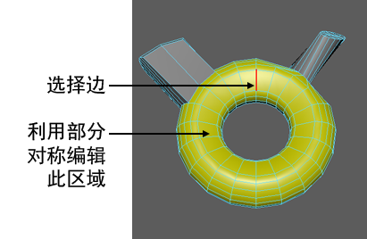

在不是拓扑对称的网格上激活拓扑对称时，默认情况下部分拓扑对称会激活。可以使用部分拓扑对称编辑对称网格的各个部分，即使网格不是整体对称也可以这样做。
使用部分拓扑对称编辑网格
- 选择网格上的边。
选定边周围的局部区域必须是对称的。
- 激活拓扑对称。请参见激活或取消激活对称。
- 使用拓扑对称编辑选定边周围的区域。
例如，以下模型不是拓扑对称模型，因为它每一半中的面数不相等。但是，其中有拓扑对称的部分，可以使用部分拓扑对称编辑它们。例如，选定边（红色）周围的局部区域（黄色）是拓扑对称的，因此可以在该区域中进行对称编辑。

提示： 在任何变换工具的
“工具设置”(Tool Settings)的
“对称设置”(Symmetry Settings)部分中，禁用
“允许部分对称”(Allow partial symmetry)以禁用部分对称。 如果使用的工具可能会在不对称的网络上生成层状体面或其他不需要的构造，这特别有用。请参见
使用四边形绘制添加多边形。